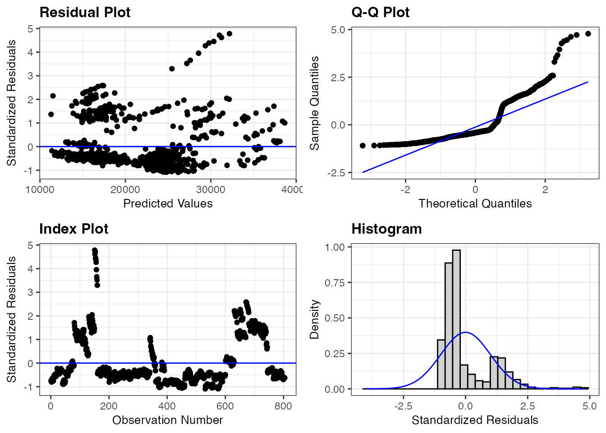
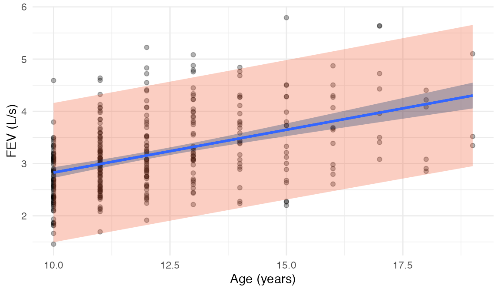

Practice questions for each skill on the Quiz02 Review sheet. The data sets are ones we’ve seen in class, but the models and questions are new.
1. Express a MLR model using proper notation
Example question The bikes data include the year of each day (2011 or 2012). The model below allows the relationship between temperature (temp_actual, in degrees F) and daily rides to be different in the two years.
year_mod <-lm(rides ~ temp_actual * year, data = bikes)summary(year_mod)
Call:
lm(formula = rides ~ temp_actual * year, data = bikes)
Residuals:
Min 1Q Median 3Q Max
-4400.9 -565.7 9.0 663.2 2350.4
Coefficients:
Estimate Std. Error t value Pr(>|t|)
(Intercept) -1946.022 370.162 -5.257 2.18e-07 ***
temp_actual 71.587 5.833 12.272 < 2e-16 ***
year2012 193.113 539.201 0.358 0.7204
temp_actual:year2012 24.174 8.406 2.876 0.0042 **
---
Signif. codes: 0 '***' 0.001 '**' 0.01 '*' 0.05 '.' 0.1 ' ' 1
Residual standard error: 951.9 on 496 degrees of freedom
Multiple R-squared: 0.6368, Adjusted R-squared: 0.6346
F-statistic: 289.9 on 3 and 496 DF, p-value: < 2.2e-16
Using proper statistical notation, write down the theoretical model that was fit. Write it as a single equation using \(x_1, x_2\), etc., define all variables, and state the assumption on the error term.
Write down the fitted regression equation for 2011 and for 2012 separately.
where \(Y_i\) is the number of rides on day \(i\), \(x_{i1}\) is the temperature (degrees F) on day \(i\), and \(x_{i2}\) is an indicator variable that equals 1 if day \(i\) is in 2012 and 0 if it is in 2011.
Example question In general, higher temperatures means more bike rides. But, on very hot days, people may be less likely to bike. This relationship can be captured with a quadratic model. Below is a quadratic model for daily rides using temperature.
quad_mod <-lm(rides ~ temp_actual +I(temp_actual^2), data = bikes)tidy(quad_mod)
Write down the theoretical model, defining all variables and stating the assumption on the error term.
Write down the fitted model.
Is this still a linear regression model, even though the fitted model is a curve? Explain.
TipSolution
\(Y_i = \beta_0 + \beta_1 x_i + \beta_2 x_i^2 + \varepsilon_i, \quad \varepsilon_i \overset{iid}{\sim} N(0, \sigma^2)\), where \(Y_i\) is the number of rides on day \(i\) and \(x_i\) is the temperature (degrees F) on day \(i\).
Yes. The model is still linear in the\(\beta\)’s: the mean is a sum of coefficients times (functions of) the predictor. Squaring the predictor changes the shape of the fitted curve, but we still estimate the \(\beta\)’s with least squares, check the same conditions, and do inference the same way. One way to think of it is we are creating a new predictor \(x_2\), where \(x_2 = x_1^2\). Polynomial regression is then still multiple linear regression.
2. Interpret the coefficients and \(R^2\) of a model in context
Example question Below is a model for daily rides using temperature (temp_actual, in degrees F), humidity (in %), and whether the day was a weekend (weekend).
Call:
lm(formula = rides ~ temp_actual + humidity + weekend, data = bikes)
Residuals:
Min 1Q Median 3Q Max
-4462.4 -883.6 -104.1 811.0 2720.7
Coefficients:
Estimate Std. Error t value Pr(>|t|)
(Intercept) -871.252 369.446 -2.358 0.0187 *
temp_actual 97.351 5.465 17.814 < 2e-16 ***
humidity -25.366 3.628 -6.993 8.77e-12 ***
weekendTRUE -717.710 119.105 -6.026 3.28e-09 ***
---
Signif. codes: 0 '***' 0.001 '**' 0.01 '*' 0.05 '.' 0.1 ' ' 1
Residual standard error: 1195 on 496 degrees of freedom
Multiple R-squared: 0.4273, Adjusted R-squared: 0.4239
F-statistic: 123.4 on 3 and 496 DF, p-value: < 2.2e-16
Interpret the coefficient for humidity in context.
Interpret the coefficient for weekendTRUE in context.
Interpret the \(R^2\) value in context.
TipSolution
Holding temperature and weekend/weekday constant, each additional percentage point of humidity is associated with about 25.4 fewer rides per day, on average.
Holding temperature and humidity constant, weekend days have about 718 fewer rides than weekdays, on average.
About 42.7% of the variability in daily rides is explained by the model with temperature, humidity, and weekend. (To interpret the variability explained by the model, we shoudl use “regular” \(R^2\) instead of adjusted)
Example question Below is a model for the Price of used cars (in dollars) using Mileage and the body Type of the car (convertible, coupe, hatchback, sedan, or wagon).
type_mod <-lm(Price ~ Mileage + Type, data = cars)summary(type_mod)
Call:
lm(formula = Price ~ Mileage + Type, data = cars)
Residuals:
Min 1Q Median 3Q Max
-12573 -5797 -2292 3689 26652
Coefficients:
Estimate Std. Error t value Pr(>|t|)
(Intercept) 4.489e+04 1.354e+03 33.158 < 2e-16 ***
Mileage -1.960e-01 3.489e-02 -5.616 2.7e-08 ***
TypeCoupe -2.327e+04 1.334e+03 -17.443 < 2e-16 ***
TypeHatchback -2.698e+04 1.551e+03 -17.391 < 2e-16 ***
TypeSedan -1.996e+04 1.202e+03 -16.596 < 2e-16 ***
TypeWagon -1.800e+04 1.528e+03 -11.777 < 2e-16 ***
---
Signif. codes: 0 '***' 0.001 '**' 0.01 '*' 0.05 '.' 0.1 ' ' 1
Residual standard error: 8096 on 798 degrees of freedom
Multiple R-squared: 0.3334, Adjusted R-squared: 0.3292
F-statistic: 79.82 on 5 and 798 DF, p-value: < 2.2e-16
Which type of car is the reference level? How can you tell?
Interpret the coefficient for TypeSedan in context.
The Mileage coefficient is very small because it describes a 1-mile change. Interpret it for an increase of 10,000 miles.
Which of the following is the best explanation for why the adjusted \(R^2\) (0.329) is smaller than the \(R^2\) (0.333)?
A. Adjusted \(R^2\) removes outliers before computing the proportion of variability explained. B. Adjusted \(R^2\) includes a penalty for the number of predictors in the model. C. Adjusted \(R^2\) only uses the quantitative predictors. D. Adjusted \(R^2\) is computed on the log scale.
TipSolution
Convertible. It is the only type that does not have its own indicator variable (coefficient) in the output, so it is the group where all of the type indicators equal 0. (R chose it because it comes first alphabetically.)
Holding mileage constant, sedans sell for about $19,955 less than convertibles, on average.
\(10{,}000 \times (-0.196) = -1960\). Holding the type of car constant, every additional 10,000 miles is associated with a price that is about $1,960 lower, on average.
B.\(R^2\) never decreases when we add predictors (even useless ones), so adjusted \(R^2\) adjusts for the number of predictors. That makes it a better tool for comparing models with different numbers of predictors.
3. Check necessary conditions for a multiple regression model and discuss the implications of a model deficiency
Example question Here are the residual plots for a model of used car Price using Mileage and engine size (Liter). In this data set, the cars are listed in order of make and model (e.g., all of the Buick Centurys are listed together).
liter_mod <-lm(Price ~ Mileage + Liter, data = cars)resid_panel(liter_mod, type ="standardized")

Which condition(s) look violated? Say which plot(s) you used to tell.
Look at the index plot. What do you think is causing the “runs” of residuals that are all above (or all below) zero? What does this suggest about the model?
Given these violations, can you trust the p-values in the summary() output for this model? Can you trust the estimated coefficients? Explain.
TipSolution
Independence: the index plot shows long runs of residuals on the same side of zero, so residuals for cars that are next to each other in the data are related. Normality: the Q-Q plot curves well above the line in the upper tail, and the histogram is right-skewed (and looks like it has two groups). Equal variance is also questionable: the residual plot has a few groups of points that fan out above the line.
Since the cars are listed by make and model, the runs are groups of cars of the same make/model. Cars of the same model have similar prices, so if the model over- or under-predicts one of them, it does the same for the rest. This suggests the model is missing an important predictor (like Make, or the model of the car), and that the observations aren’t independent given only Mileage and Liter.
No, the p-values aren’t trustworthy. The independence violation means the standard errors are too small (we have less independent information than \(n\) suggests), so the p-values and confidence intervals are too optimistic. The estimated coefficients are also suspect, but for a different reason: if an important predictor is missing, the coefficients for Mileage and Liter may be picking up its effect.
Example question The Duncan data recorded the prestige, income, and education ratings of 45 occupations (all measured as percentages). Here are the leverage and Cook’s distance plots, plus the five occupations with the largest Cook’s distances, for the model prestige ~ income + education.
duncan_mod <-lm(prestige ~ income + education, data = duncan)resid_panel(duncan_mod, plots =c("lev", "cookd"), type ="standardized", nrow =1)
Calculate the two leverage cutoffs we discussed in class.
Which occupation has the highest leverage? Is it influential? Explain why or why not.
Which occupation is the most influential? Explain using its leverage and standardized residual.
Below are the coefficients with and without that occupation. Following the flowchart from Day 13, what would you do next?
term
all 45 occupations
without influential point
(Intercept)
-6.065
-6.628
income
0.599
0.732
education
0.546
0.433
TipSolution
Here \(n = 45\) and \(p = 2\), so \(2(p+1)/n = 6/45 \approx 0.133\) and \(3(p+1)/n = 9/45 = 0.2\).
The RR.engineer has the highest leverage (0.27, above both cutoffs). It is not very influential: its standardized residual is small (0.81) and its Cook’s distance is only 0.08. Its income and education are unusual, but its prestige is about what the model predicts, so it falls along the trend and doesn’t pull the fitted model much.
The minister has the largest Cook’s distance (0.57). It has both a fairly high leverage (0.17, above the smaller cutoff) and a large standardized residual (2.85): ministers have much higher prestige than their income would predict. It’s the combination of the two that makes a point influential.
The coefficients change noticeably when ministers are removed (the income coefficient goes up, and the education coefficient goes down). Following the flowchart: the conclusions change, so we ask whether ministers belong to a different population than the one under investigation. If there’s a good reason to think so (for example, if clergy didn’t count seminary as part of education or reported $0 income), we could omit them and say so. Otherwise, we’d report both fits and say that more data are needed.
4. Perform hypothesis tests about a single regression coefficient
Example question Use the year_mod output from Skill 1. Is there evidence that the relationship between temperature and ridership changed from 2011 to 2012?
State the null and alternative hypotheses in words and using proper notation.
Show how the test statistic was calculated, and give its degrees of freedom.
Report the p-value and state your conclusion in context.
TipSolution
Using the model from Skill 1, the difference in slopes between 2012 and 2011 is \(\beta_3\) (the interaction coefficient).
\(H_0: \beta_3 = 0\) (the slope for temperature is the same in both years) vs. \(H_A: \beta_3 \ne 0\) (the slope for temperature is different in 2011 and 2012).
\(p =\) 0.0042 (two-sided, from the output). There is strong evidence that the relationship between temperature and ridership was different in 2012: each additional degree was associated with about 24.2 more additional rides in 2012 than in 2011.
Example question Use the humid_mod output from Skill 2. Before looking at the data, an analyst hypothesized that more humid days have fewer rides, after accounting for temperature and whether it’s a weekend.
State \(H_0\) and \(H_A\) in symbols, matching the analyst’s hypothesis.
Calculate the test statistic.
Is the p-value in the summary() output the right one to use? If not, how would you find the correct p-value? State your conclusion.
TipSolution
Let \(\beta_2\) be the coefficient for humidity. \(H_0: \beta_2 = 0\) vs. \(H_A: \beta_2 < 0\).
No: R reports a two-sided p-value, but the analyst’s alternative is one-sided. Since the test statistic is negative (in the direction of \(H_A\)), the correct p-value is half of R’s. R reports \(p =\) 8.77e-12, so the one-sided p-value is about 4.4e-12. There is very strong evidence that, holding temperature and weekend/weekday constant, more humid days have fewer rides on average.
5. Construct and interpret confidence intervals for regression coefficients and linear combinations of regression coefficients
Example question Use the humid_mod output from Skill 2, and the qt() output below.
qt(.01, df =496, lower.tail =FALSE)
[1] 2.333889
qt(.025, df =496, lower.tail =FALSE)
[1] 1.964758
qt(.05, df =496, lower.tail =FALSE)
[1] 1.647932
qt(.1, df =496, lower.tail =FALSE)
[1] 1.283261
Construct a 90% confidence interval for the coefficient of humidity.
Interpret your interval in context.
TipSolution
For a 90% interval, there is 5% in each tail, so \(t^* =\) 1.648 (from qt(.05, df = 496, lower.tail = FALSE)).
We are 90% confident that, holding temperature and weekend/weekday constant, each additional percentage point of humidity is associated with between 19.4 and 31.3 fewer rides per day, on average.
Example question Use the year_mod model from Skill 1. Below is the covariance matrix of the estimated coefficients.
Write the slope for temperature in 2012 as a linear combination of the model coefficients, and calculate its estimate.
Calculate the standard error of the 2012 slope. Why can’t you just add the two standard errors from the summary() output?
Construct a 95% confidence interval for the 2012 slope, and interpret it in context.
A city planner claims that, in 2012, each additional degree F was associated with 100 more rides per day, on average. Conduct a hypothesis test of this claim.
TipSolution
The 2012 slope is \(\gamma = \beta_1 + \beta_3\) (so \(c_1 = c_2 = 1\)).
We can’t just add the standard errors because (1) variances add, not standard errors, and (2) the two estimates are correlated, so we need the covariance term. Here the covariance is negative, which makes the standard error smaller.
The p-value is the area in both tails of a \(t\) distribution with 496 df beyond \(\pm 0.7\), which is about 0.48. There is no evidence against the planner’s claim: a 2012 slope of 100 rides per degree is consistent with the data. (We could also see this from the interval in (c), which contains 100.)
6. Use a regression model to make appropriate predictions and communicate the uncertainty of these predictions through an interval
Example question Use the humid_mod model from Skill 2. For a weekend day with a temperature of 80°F and 50% humidity, the predicted number of rides is 4931. R gives these two 95% intervals: (2563, 7299) and (4628, 5233).
Which interval is the confidence interval and which is the prediction interval? How can you tell?
Capital Bikeshare is scheduling staff for next Saturday, which is forecast to be 80°F with 50% humidity. Which interval should they use?
Interpret the interval you did not choose in (b).
TipSolution
(4628, 5233) is the confidence interval and (2563, 7299) is the prediction interval. The prediction interval is wider because it accounts for both the uncertainty in the estimated mean and the variability of one individual day around that mean.
The prediction interval, since they are predicting the number of rides on one specific day.
We are 95% confident that the average number of rides, across all weekend days with a temperature of 80°F and 50% humidity, is between 4628 and 5233.
Example question The plot below shows lung function (FEV, in L/s) vs. Age for the 345 adolescents in the FEV data, along with the fitted SLR line and two shaded bands.

Which band (wide orange or narrow dark) shows the confidence intervals, and which shows the prediction intervals?
Why does it make sense that one band is so much wider than the other?
Where is the narrow dark band narrowest? Why?
TipSolution
The narrow dark band shows the confidence intervals for the mean FEV; the wide orange band shows the prediction intervals for individual adolescents.
The prediction interval includes the person-to-person variability of individual observations around the mean (\(\widehat\sigma\)), in addition to the uncertainty in the estimated line. That extra variability doesn’t shrink with more data, so most of the observed points fall inside the orange band.
It is narrowest near the average age (about 12.1 years). The standard error of the mean response includes \((x_0 - \bar{x})^2\), so we’re most certain about where the line is near the center of the data, and less certain toward the edges (here, the older ages, where there are also fewer observations).
7. Conduct inference to compare nested regression models
Example question In the first week of class, we used the NHANES data to model a depression risk score (dep_score, the log of the PHQ-9 score + 1) using daily sitting time (sedentary_hours). The data also record each participant’s sex. Researchers want to know whether sex is related to the depression score at all (as either a shift in the line, a change in the slope, or both), after accounting for sitting time. They compare these two models:
Model 1: dep_score ~ sedentary_hours
Model 2: dep_score ~ sedentary_hours * sex
Model
Residual df
SSE
Model 1: dep_score ~ sedentary_hours
657
512.88
Model 2: dep_score ~ sedentary_hours * sex
655
503.90
Are these models nested? Which is the full model and which is the reduced model?
Write out the full model, then state the null and alternative hypotheses using proper \(\beta\) notation.
Calculate the F-statistic and give its degrees of freedom.
Describe how the p-value is found (what distribution, and which tail?). The output below may help.
pf(5.83, df1 = 2, df2 = 655, lower.tail = FALSE)
[1] 0.003092683
What do you conclude?
TipSolution
Yes. Model 1 is Model 2 with the two sex terms set to 0, so Model 2 is the full model and Model 1 is the reduced model.
Full model: \(\mu\{Y | X\} = \beta_0 + \beta_1 \text{sedentary} + \beta_2 \text{male} + \beta_3 \text{sedentary} \times \text{male}\), where male is an indicator equal to 1 for male participants and 0 for female participants (the reference level).
\(H_0: \beta_2 = \beta_3 = 0\) (sex is not related to the depression score after accounting for sitting time) vs. \(H_A:\) at least one of \(\beta_2, \beta_3 \ne 0\).
\(d = 657 - 655 = 2\) coefficients are being tested.
The p-value is the area in the upper tail of an \(F\) distribution with 2 and 655 degrees of freedom, above 5.83. (Only large values of \(F\) are evidence against \(H_0\).) From the output, \(p \approx 0.0031\).
There is strong evidence that sex is related to the depression risk score after accounting for sitting time (through a shift in the line, a change in the slope, or both).
Example question Consider these four models for the bikes data:
Model A: rides ~ temp_actual
Model B: rides ~ temp_actual + humidity
Model C: rides ~ temp_actual * year + humidity
Model D: rides ~ humidity + weekend
For each comparison, say whether the most appropriate test is a t-test, an extra-sums-of-squares F-test, or neither, and briefly explain.
Model A vs. Model B
Model A vs. Model C
Model B vs. Model D
The summary() output for Model C ends with an F-statistic. Which two models does that F-test compare?
TipSolution
A t-test for the humidity coefficient in Model B. The models differ by one coefficient, so the t-test and the F-test are the same test (\(F = t^2\)).
An extra-sums-of-squares F-test. Model A is nested in Model C, and the models differ by three coefficients (year2012, the temp_actual:year2012 interaction, and humidity), which a single t-test can’t test at once.
Neither. The models are not nested (each has a predictor the other doesn’t), so neither test applies.
Model C vs. the intercept-only model (\(\mu\{Y|X\} = \beta_0\)). It tests whether any of the predictors in Model C are useful.
8. Interpret the coefficients an MLR model when transformations have been used on the response and/or the explanatory variables
Example question Below is a model for the log of used car prices using engine size (Liter) and whether the car has cruise control (Cruise: 1 = yes, 0 = no).
cruise_mod <-lm(log(Price) ~ Liter + Cruise, data = cars)tidy(cruise_mod)
Interpret the Liter coefficient in terms of price on the original scale (dollars).
Interpret the Cruise coefficient in terms of price.
TipSolution
\(e^{0.175} \approx 1.191\). Holding cruise control constant, each additional liter of engine size multiplies the predicted price by about 1.19, i.e., about a 19% increase in predicted price.
\(e^{0.3} \approx 1.35\). Holding engine size constant, the predicted price of a car with cruise control is about 1.35 times the predicted price of a car without it, i.e., about 35% higher.
Example question Here are two models for used car Price using a log transformation of Mileage.
logx_mod <-lm(Price ~log(Mileage), data = cars)coef(logx_mod)
(Intercept) log(Mileage)
43013.577 -2221.761
loglog_mod <-lm(log(Price) ~log(Mileage), data = cars)coef(loglog_mod)
(Intercept) log(Mileage)
10.72537349 -0.08676928
For logx_mod, interpret the slope in terms of a doubling of mileage.
For loglog_mod, which of the following is the best interpretation of the slope?
A. A 1-mile increase in mileage is associated with a 0.087 dollar decrease in price, on average. B. A 1% increase in mileage is associated with an estimated 0.087% decrease in price. C. A 1% increase in mileage is associated with an estimated 8.7% decrease in price. D. A 1-mile increase in mileage is associated with an \(e^{-0.087}\) dollar decrease in price, on average.
Suppose we had used \(\sqrt{\text{Price}}\) as the response instead. Could we interpret the slope on the original scale (dollars) the same way? Why or why not?
TipSolution
Doubling the mileage increases \(\log(\text{Mileage})\) by \(\log(2) \approx 0.693\). So doubling the mileage is associated with a change in average price of about \(-2222 \times 0.693 \approx -1540\) dollars, i.e., a decrease of about $1,540.
B. In a log-log model, the slope is (approximately) the percent change in \(y\) for a 1% increase in \(x\). (More precisely, a 1% increase in mileage multiplies the predicted price by \(1.01^{-0.087} \approx 0.99914\).)
No. There’s no simple back-transformation for a square root that turns a constant change in \(\sqrt{\text{Price}}\) into a constant change (or a constant percent change) in price. We could still use the model for predictions (by squaring the predicted values), but the slope doesn’t have a clean interpretation on the original scale. That’s one reason log transformations are so popular.
9. Diagnose multicollinearity and explain its consequences
Example question Below is a model for the log of used car prices using Mileage, engine size (Liter), and the number of cylinders (Cyl).
Which pair of predictors is the most problematic in terms of multicollinearity? Why?
Show how the VIF for Liter was calculated.
Using the guidelines from class, how serious is the multicollinearity in this model?
Compare the estimate and standard error for Liter in the two models. What happened, and why?
Suppose we only want to use cyl_mod to predict the price of used cars like the ones in this data set. Is the multicollinearity a big problem for that goal? Explain.
TipSolution
Liter and Cyl: their correlation is 0.958. That makes sense, since engines with more cylinders tend to be bigger. Mileage is essentially uncorrelated with both.
\(\text{VIF}_{\text{Liter}} = \dfrac{1}{1 - R^2_{\text{Liter}}}\), where \(R^2_{\text{Liter}}\) is the \(R^2\) from the model predicting Liter using the other predictors (Mileage and Cyl): \(\dfrac{1}{1 - 0.918} \approx 12.1\).
The VIFs for Liter and Cyl are both about 12.1, which is above 10, so this indicates a problem (but not above 100, so not a “big” problem). The VIF for Mileage is about 1, so it isn’t affected.
Without Cyl, the Liter coefficient is 0.218 with a standard error of 0.0104. With Cyl in the model, it is 0.148 with a standard error of 0.0363: the standard error is about 3.5 times bigger. (That’s close to \(\sqrt{\text{VIF}} = \sqrt{12.1} \approx 3.5\).) Because Liter and Cyl carry almost the same information, the model can’t tell their effects apart: the estimate changes depending on whether the other is included, and its standard error is inflated.
Not really. Multicollinearity makes the individual coefficients unstable and hard to interpret, but the predictions can still be good, as long as the cars we predict for have the same relationship between Liter and Cyl as the cars in the data.